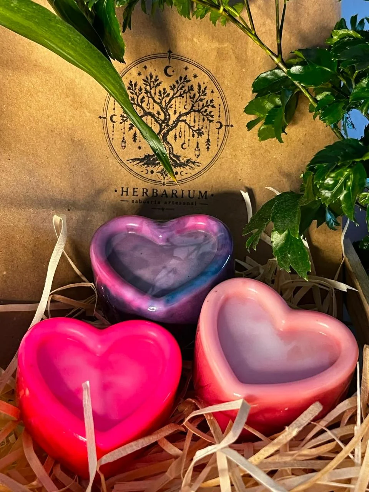
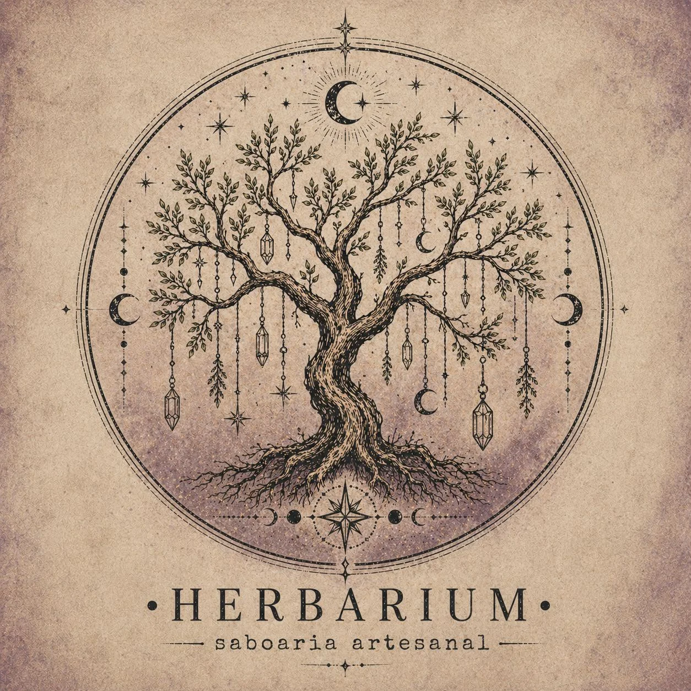
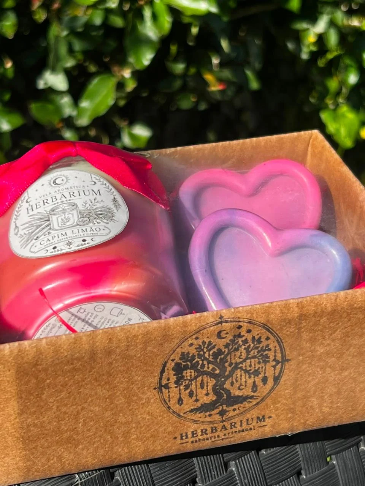
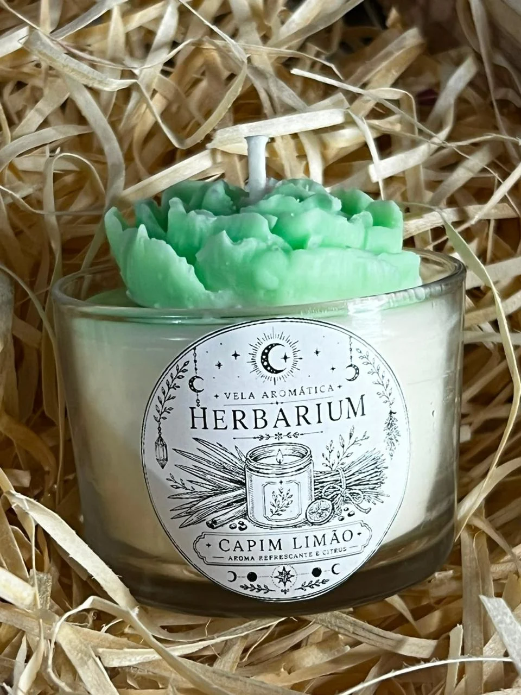
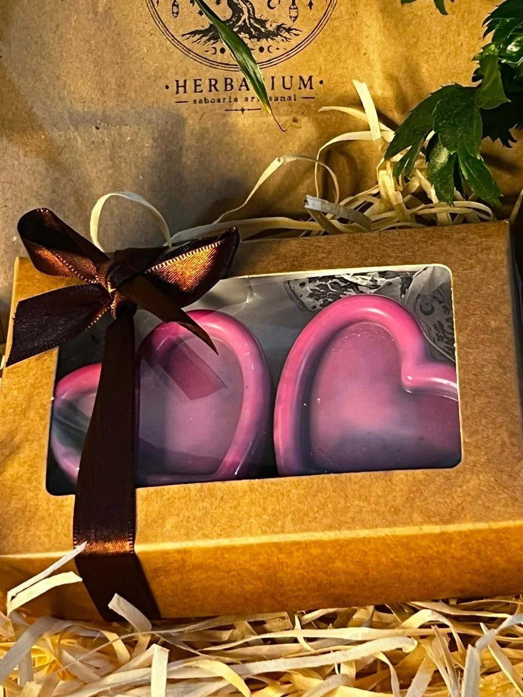
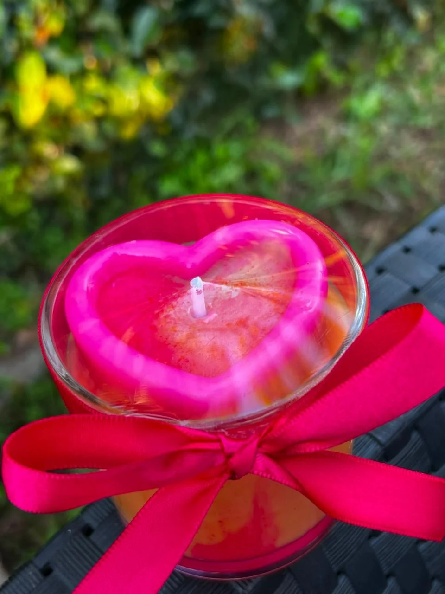
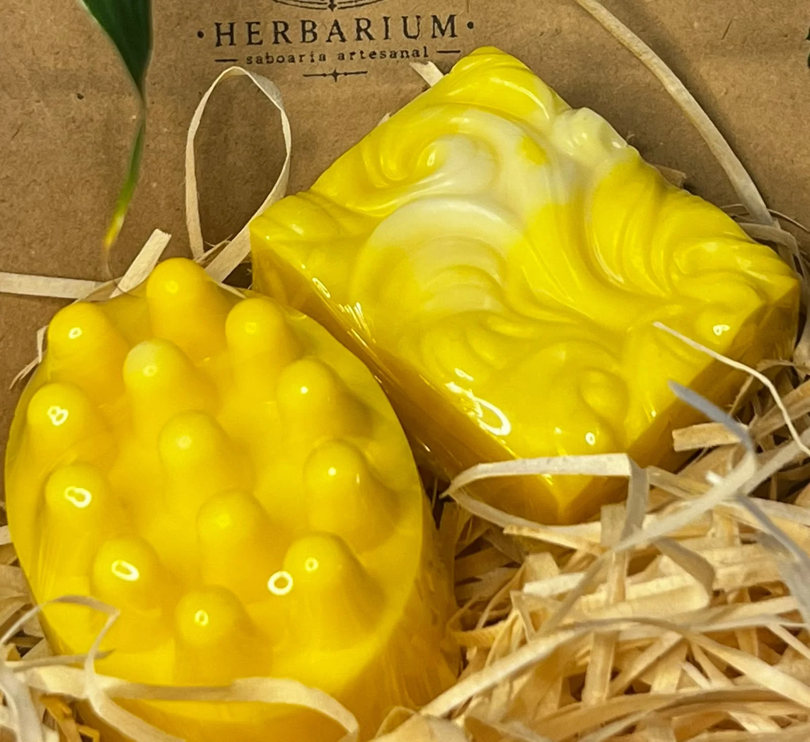
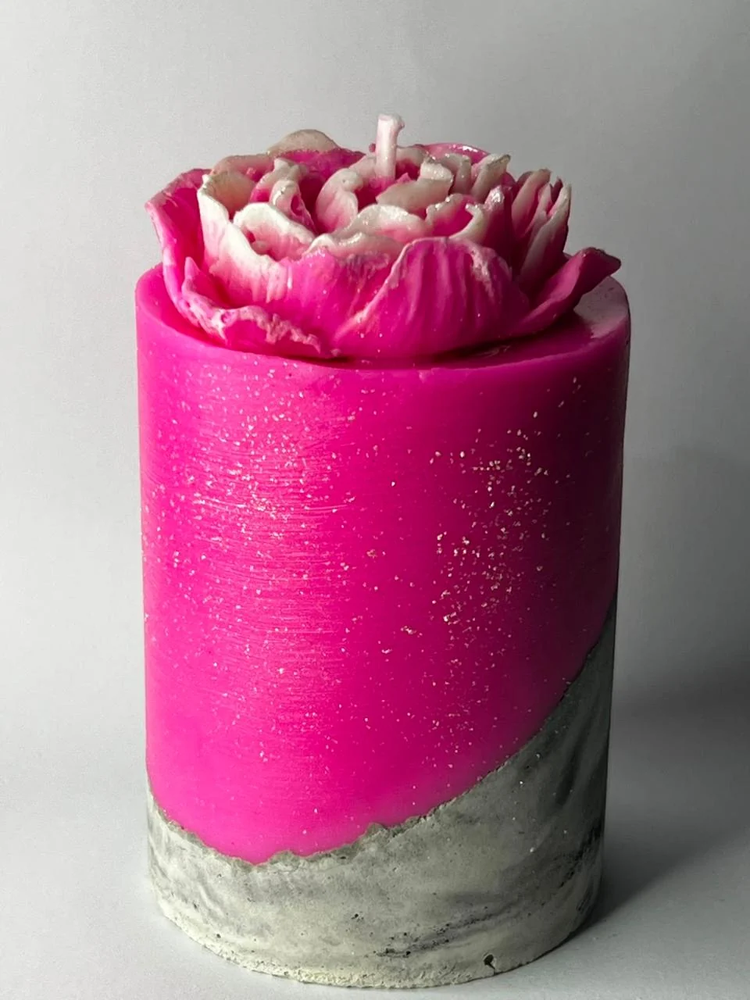

Banho ritualSabonetes artesanais
Para banho, lembrancinhas e kits: peças perfumadas, delicadas e feitas em pequenos lotes.
Quero sabonetes
Herbarium Produtos Artesanais
Curitiba | Feito à mão por Fernanda Krokoscz
Sabonetes, velas aromáticas, escalda-pés e kits artesanais para autocuidado e presentes.
Natureza, cuidado e pequenos rituais
Cada peça da Herbarium nasce em pequenas produções, com atenção ao toque, ao aroma, às cores e ao tempo de cada processo. O artesanal carrega esse encanto: nenhum item é completamente igual ao outro.
Sabonetes, velas aromáticas e escalda-pés são criados para presentear, acolher e tornar os cuidados diários mais bonitos, sensoriais e presentes.
Feitos em pequenos lotes

Banho ritualPara banho, lembrancinhas e kits: peças perfumadas, delicadas e feitas em pequenos lotes.
Quero sabonetes
Casa perfumadaPara casa, presente e ritual de descanso: aromas que criam clima e deixam o ambiente mais acolhedor.
Quero velasPara pausa, relaxamento e autocuidado: uma forma simples de desacelerar e transformar o fim do dia em ritual.
Quero escalda-pés Foto em breveQuando escolher Herbarium




Para você ou para presentear
A Herbarium monta combinações sob encomenda para datas especiais, lembrancinhas, presentes afetivos e pequenos rituais de cuidado. Os detalhes de aromas, cores, disponibilidade e envio são combinados diretamente pelo WhatsApp.
Pedir opções de kitPor trás da marca
A Herbarium nasceu do encanto pelos aromas naturais, pelas pequenas pausas e pela beleza das coisas feitas à mão.
Criamos produtos artesanais para transformar pequenos momentos de autocuidado em rituais calmos, acolhedores e especiais.
Encomendas em Curitiba e envio a combinar
Fale com a Fernanda pelo WhatsApp para consultar aromas, produtos disponíveis, prazos, kits e formas de entrega.